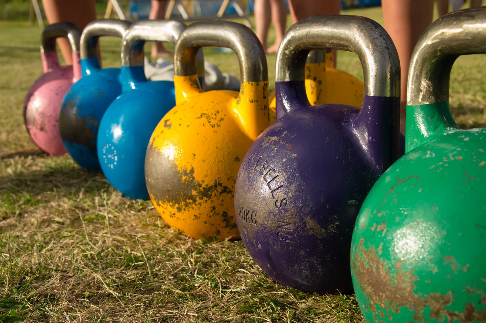
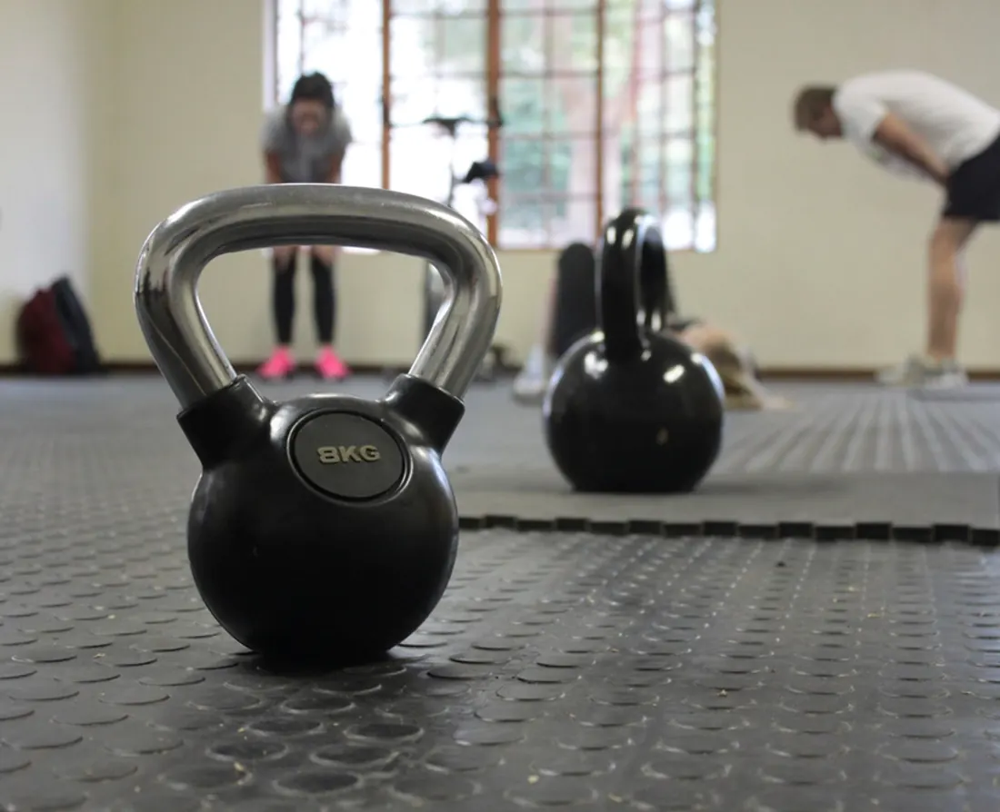
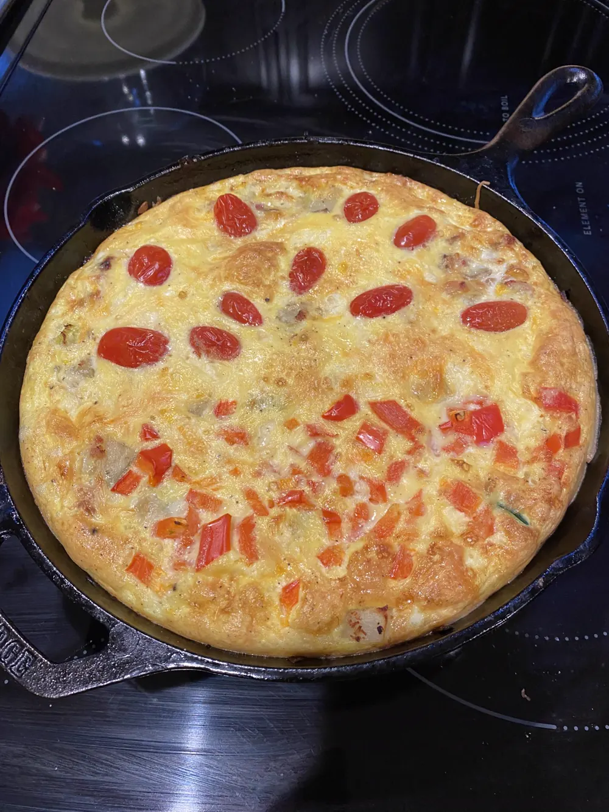
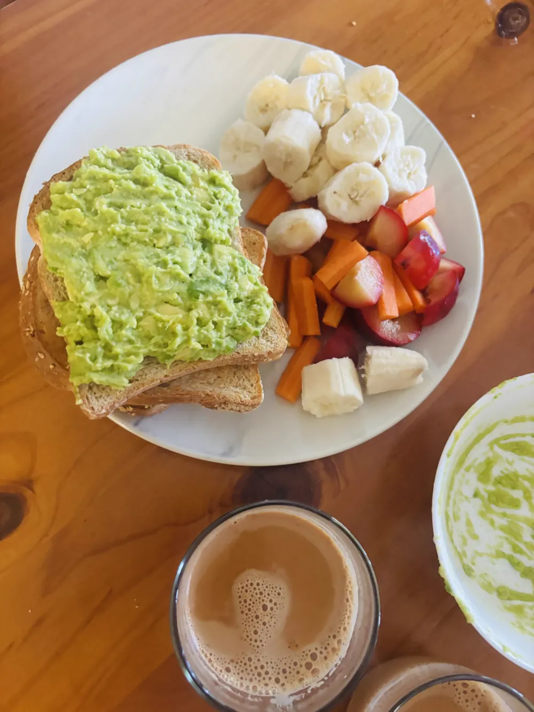
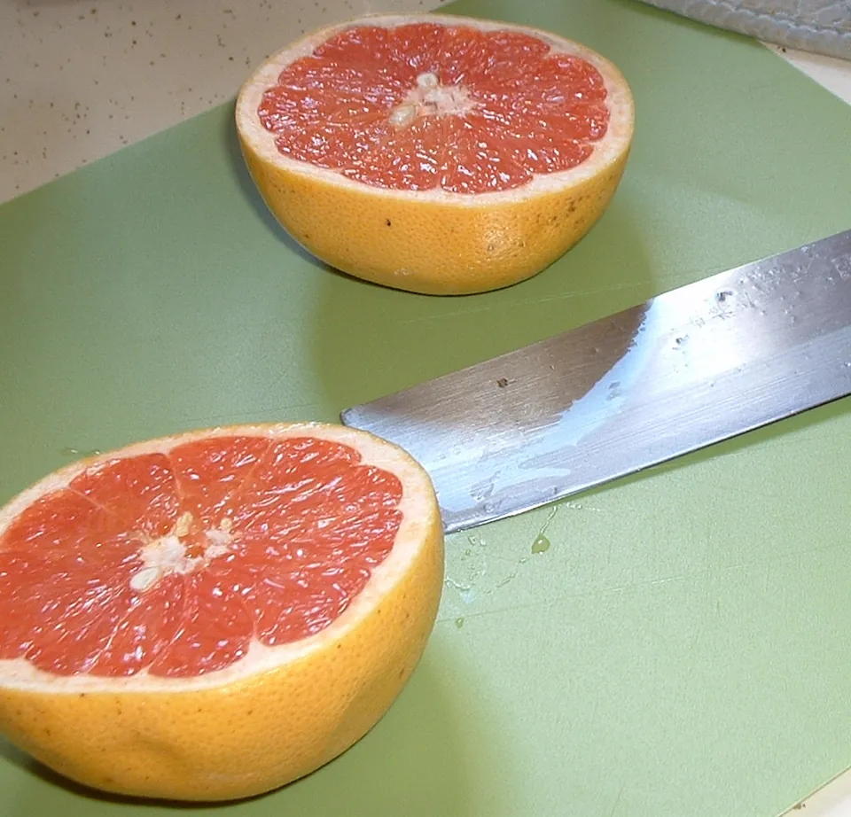

Entrena. Come. Rinde.
Lo que haces en el gimnasio y lo que pones en el plato van juntos. Aquí te lo contamos sin complicaciones.
Ver las ideas
Una sola idea: entrenar y comer son la misma conversación.
Si estás empezando
Técnica básica, comidas sencillas y los errores que conviene evitar. Sin tecnicismos ni juicios.
Si ya llevas tiempo
Variantes de ejercicios, formas de organizar tus comidas y el porqué de cada consejo.

Entrena
Tres errores que frenan tu sentadilla
- Levantar los talones. Mantén todo el pie apoyado.
- Meter las rodillas hacia dentro. Llévalas en la línea de los pies.
- Bajar sin control. Baja despacio y sube con fuerza.

Come
Una cena en 10 minutos para después de entrenar
- Bate dos o tres huevos.
- Añade tomate en dados y, si tienes, espinacas.
- Cuájala en la sartén y acompáñala con pan integral.

Entrena y come
Qué comer antes de entrenar a primera hora
- Con poco tiempo: algo ligero, como un plátano o una tostada.
- Con más de una hora: un desayuno algo más completo.
- Siempre: prueba qué te sienta mejor, porque cada persona es distinta.

Sin mitos
¿De verdad hay comidas que queman grasa?
No. Ningún alimento quema grasa por sí solo. Lo que cuenta es lo que comes en conjunto y cuánto te mueves.
Quién está detrás
Soy Óscar. Tengo el grado superior en Condicionamiento Físico y Fitness y estudio Ciencias de la Actividad Física y del Deporte. Kettlebite nace para compartir lo que aprendo sobre entrenar y comer bien.
No soy nutricionista. Aquí encontrarás ideas generales, no dietas personalizadas.